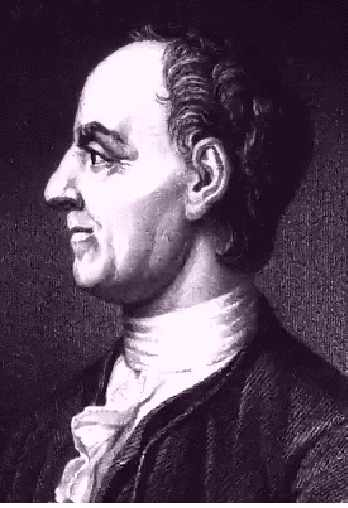

1996-02-29
Okbita kodo por prezenti tekstajn datumojn, uzita precipe en la komputiloj IBM/360 kaj IBM/370.
EBCDIC disponigis signaron proksiman al tiu de Askio, tamen malsimile aranĝitan; ĝi malhavis la kvadratajn krampojn, sed entenis cendosignon kaj negan fajrohokon.
Noto. Rilato al la duum-dekuma prezento, aludata de la angla nomo, estas enigmo aŭ mistifiko.
1996-02-29
 Grafeo desegnebla sur ebeno tiel, ke la linioj, respondaj al la eĝoj,
ne havas komunaĵon ekster la aro de punktoj,
respondaj al la verticoj. Ekz-e
Grafeo desegnebla sur ebeno tiel, ke la linioj, respondaj al la eĝoj,
ne havas komunaĵon ekster la aro de punktoj,
respondaj al la verticoj. Ekz-e  estas ebena grafeo kaj
estas ebena grafeo kaj  , neebena grafeo.
, neebena grafeo.
Angle: planar graph
Ruse: плоский граф
1996-02-29
Ŝalti opcion disponigantan koncernan reĝimon; ekz-e ĉe muntado de Uniksa xterm oni povas ebligi la uzon de UTF-8 en komandlinia interfaco per la opcio –enable-wide-chars, kiu aldonas al la konstruata kodo la rimedojn por trakti 16-bitajn kodonojn.
Angle: enable
2001-07-08
«Io kion oni povas fari; eventuala rimedo» [PIV1].
Utila eco de programa aŭ aparata produkto; ekz-e redaktilo povas disponigi la eblon malfari redaktojn; lasera printilo, la eblon printi sur ambaŭ flankoj de paperfolio ktp.
Angle: feature
Ruse: возможность,
свойство, функция
2000-06-17
 Islanda kaj feroa litero, etlitere ð ĉeflitere Ð. Historie ĝi estas grafika
variaĵo de la tria runo (dorno), kaj tradicie
estis same nomata (thorn — almenaŭ en la angla ĝis 11 jc).
Islanda kaj feroa litero, etlitere ð ĉeflitere Ð. Historie ĝi estas grafika
variaĵo de la tria runo (dorno), kaj tradicie
estis same nomata (thorn — almenaŭ en la angla ĝis 11 jc).
En la Internacia Fonetika Alfabeto edo havas sian Islandan fonetikan valoron (tiun de «th» en la angla father).
Oni ne konfuzu edon kun la «Latina litero trastrekita d» (Đ / đ), kiun la kroatoj uzas por [ĝ].
Noto. Laŭ la koncerna Islanda liternomo, kiu estas "e"+edo.
☺ En la Islanda lingvo tiu liternomo ne havas neliteran signifon, tamen parodiante la liternomon «dorno», Manuel M. Campagna, konata en soc.culture.esperanto kiel Manvxelo KAMPANJAHXA, rekomendis:
Ne. Edzo. Dorno kaj edzo.
Angle: eth, edh
1996-03-30
Etendita formo de Backus—Naur (vd tie kaj sub sintakso), la normo
ISO/IEC 14977:1996 Information technology — Syntactic metalanguage — Extended BNF.Ankaŭ http://www.cl.cam.ac.uk/~mgk25/iso-ebnf.html.
Angle: EBNF
1996-02-29
Nedaŭra prezento de eligaĵo, ekz-e per surekranigo aŭ per sonsignalo. Kp molaĵo, printaĵo.
Angle: soft copy
Germane: flüchtige Kopie
Ruse: изображение
на экране
1996-02-29
Algoritmo (aŭ programo) estas efika se ĝi faras sian taskon uzante nur relative malgrandajn risurcojn (precipe tempon kajaŭ memoron). La komplikteorio studas la grandoordon de minimume bezonataj risurcoj depende je la enigaĵo. La programo, kiu bezonas strikte la minimumon da risurcoj, estas optima rilate al tiuj risurcoj.
Noto. Laŭ PIV1,
1 Eco de tio, kio efikas: … kuracilo de granda efikeco. 2 La kvociento de la valoro de tiu grando (povumo, energio, elektrokvanto ktp), kiu estas elmetata kiel utiligebla, per la valoro de tiu, kiu estas ensorbata de la sistemo, plej ofte esprimata laŭ procentoj (=efikanco).Laŭ la anglaj effective computation, effective function eblas konfuzo inter efikeco kaj komputeblo. Pli logikaj kaj malpli konfuzivaj estus terminoj optima kaj rendimento, dum efika devus signifi «atinganta la celatan rezulton» (ĉu optime, ĉu ne).
Angle: efficiency
Ruse:
эффективность
1996-02-29
Ekrana adaptilo por personaj komputiloj kongruaj kun IBM-PC; EGA havas la distingivon 640×350 punktoj kun 16 RVB-koloroj. En la fikssignara reĝimo EGA disponigas signejojn por rastrumaj signobildoj grandaj po 8×16, 8×14 aŭ 8×8 punktoj (la grando 8×14 estas normala por EGA). La signogenerilo de EGA havas internan memoron, kiun oni povas ŝargi je diversaj tiparoj, ekz-e je tiuj kun literoj de Esperanto.
Vd ekzemplan programon (Ŝargo de EGA-signogenerilo), prezentitan en la simbola maŝinkodo MASM de IBM-PC, kaj ŝargantan la supersignitajn literojn de Esperanto.
Kp VGA.
Noto. De la angla Enhanced Graphics Adapter, t.e. «plibonigita grafika adaptilo».
1996-02-29
Formulo asertanta, ke la valoroj de du esprimoj egalas, simbole a=b, kie la esprimoj a kaj b estas nomataj resp. la maldekstra parto kaj la dekstra parto de egalaĵo. Kp komparaĵo, ekvacio.
Angle: equality
Ruse: равенство
1996-02-29
Pri tiparo aŭ printa reĝimo ĉe kiu ĉiuj signobildoj havas egalan larĝon. Egallarĝa
tiparo estas malpli agrabla por la okulo kaj pli malŝpara ol la proporcia, tamen ĝi estas utila en kelkaj
aplikoj, kiam oni volas speciale aranĝi la tekston en tabelojn k.s. sen uzi
tro komplikan aranĝilon. Interalie, oni uzas tiajn tajpeskajn tiparojn por prezenti
komputillingvajn tekstopecojn.
Angle: fixed-width, monospaced
Ruse: моноширинный
1996-02-29
Kodo ĵetanta samlongajn kodataĵojn en egale longajn kodantaĵojn; ekz-e Askio, en kiu ĉiu signo estas kodata per unu bajto.
Vd longa kodono. Kp varilonga kodo.
Angle: fixed-length code
Ruse: равномерный
код
1996-02-29
Elemento de
grafeo konektanta ties verticojn. Eĝo e, konektanta la verticojn
A kaj B, estas simetria (aŭ
sendirekta) se ĝi ankaŭ konektas B kaj A.
Angle: edge
France: arête
Germane: Kante
Ruse: ребро
1996-02-29
Aperigo sur la ekrano de terminalo de la signobildoj, respondaj al la klavoj premataj de la uzulo. Tio estas la normala reĝimo, kvankam fojfoje, ekz-e kiam la enigaĵo estas pasvorto, ĝi kutime ne eĥiĝas, por ke ĝi restu sekreta.
Angle: echo
Ruse: эхо
1996-02-29
Testa frazo entenanta ĉiujn supersignitajn literojn de Esperanto, tradicie uzata por kontroli ilian aspekton en tiparo aŭ ilian bildigon.
2003-06-03
«I. Suf. montranta lokon difinitan por io aŭ karakterizitan per io: … devenejo [Z]; senakvejo; komencejo, naskiĝejo; vagonara alirejo» [PIV1]. Iom metafore la «loko» povas esti tekstoparto (elirejo, disbranĉejo); memoro (akumulejo, signejo); valoraro (variejo, subvariejo); vertico de grafeo (transirejo, enirejo — vd Petri-reto); entrepreno, establaĵo (afiŝejo, komputejo, poŝtejo, FTP-ejo, TTT-ejo); «medio» (programara metiejo).
1997-08-02
Absoluta eraro (en nombra kalkulo), esprimata en tiaj samaj mezurunuoj, kiel la erarhava grando; «diferenco inter la proksimuma valoro de iu grando kaj la ekzakta» [PIV1]. Kp relativa eraro.
Angle: absolute error
Ruse: абсолютная
погрешность, отклонение
1996-02-29
Meĥanika, magneta, elektronika aparataro por komputado, ofte kun la kromsenco de okaza konekteblo aŭ demeteblo.
Angle: equipment, hardware
Ruse: оборудование
1996-02-29
Aparato por provizora bildigo de informoj, bloko de ekrano; kun klavaro, muso aŭ alia pikilo ekranbloko povas formi terminalon por dialoga eneligo de tekstaj kajaŭ grafikaj datumoj. Kp monitoro.
Angle: visual display unit
France: visu, visuel
Germane: Bildschirm, Datensichtstation
Ruse:
дисплей
1996-02-29
Programo kiu prezentas tute nigran aŭ moviĝantan bildon sur la ekrano de komputilo. La ekrano kurteniĝas aŭtomate se dum antaŭdifinta tempo la komputilo ricevis nenian enigon; aŭ la uzulo mem povas «ŝlosi» la ekranon laŭ sia bontrovo.
Historie la ekrankurtenoj aperis por preventi «tatuadon», t.e. kadukiĝon de la fosfora tavolo sekve de daŭra prezentado de unu sama ekranbildo je unu sama parto de la ekrano. Post 1990 tiu zorgo ne plu estas grava, sed dume la ekrankurtenoj iĝis ŝatata parto de la komputila civilizo.
Angle: screen saver
1998-12-17
Eliga organo de terminalo, kutime ortograma kaj simila al la ekrano de televidilo (la porteblaj komputiloj kutime havas platan likvakristalan ekranon). Al la komputilo ekrano estas konektata per pli-malpli programebla adaptilo, ekz-e per EGA.

Angle: screen; monitor
Ruse: экран;
монитор
1996-02-29
Kopio de grafika aspekto de ekrano, en formo de grafika dosiero aŭ surpapera printaĵo.
Angle: screen shot, screen
dump
Ruse: снимок экрана, распечатка
экрана
2000-09-28
Vd ĉe valoreksceso.
1996-02-29
Kiu ne plu veras, kiu malaktualiĝis: «eksdata referenco», «eksdata valoro» ktp. Kp ĝisdata.
Angle: stale
Ruse: протухший
2000-10-25
Stirsigno, malvalidiganta la ĵus ricevitan signon aŭ grupon da tiaj signoj; ĝia Askia kodono estas 24. Kp malfari.
Angle: CAN, cancel
France: caractère d'annulation
Germane: Auslaßzeichen, Ungültigkeitszeichen
Pole: nieważny
Ruse: знак отмены
1999-09-16
Operacio por forigi elementon el aro, ekz-e en MODULA eksigu(A,i) ekvivalentas al A := A - { i }. Simila operacio forprenu estas uzata pri liniaj listoj. Kp anigu.
Angle: exclude, EXCL; delete
Ruse: исключить
1996-02-29
Dato post kiu dosiero eksvalidiĝas kaj ĝia memoro estas malokupebla dum senrubigo (precipe se senrubigilo scias pri datumstrukturo kie la eksiĝdato estas tenata).
Angle: purge date
France: date de péremption, date d'expiration
Germane: Verfalldatum, Löschdatum
Ruse: дата
истечения срока хранения
1998-08-02
En paralelado, metodoj garantiantaj pounuopan atingon de krita risurco (ekz-e per semaforoj).
Angle: mutual exclusion,
mutex
Ruse: взаимное исключение
1998-09-03
En Paskalo, prafunkcio liveranta eksponencialon.
Angle: exp
1996-02-29
Pesita mezumo E x de stokasto x; por diskreta stokasto x kun la variejo { xk } kaj la respektiva probablodistribuo { pk },
E x = p₁⋅xk+ … + pk⋅xk
Angle: expectation
France: espérance mathématique
Germane: Erwartung(swert)
Ruse:
математическое ожидание
1996-02-29
Angle: expert system
Ruse: экспертная система
1996-02-29
La funkcio y=ax, kie a∈ℝ estas pozitiva konstanto (a≠1); simbole, por a=e, ankaŭ y=eksp x (la Paskala prafunkcio eksp). Similaj konvencioj validas por la inverso de eksponencialo, logaritmo.
Angle: exponential function
Ruse:
показательная функция
1996-02-29
« Nombro skribita dekstre de nombra aŭ algebra
kvanto, kaj montranta, ĝis kia potenco ĝi estas altigota» [PIV1].
Tiusence la termino estas uzata por la dua argumento de potencigo: ekz-e pri N en la FORTRANa A**N. Malpli ĝuste ĝi estas uzata por nomi la eksponenton de la bazo en la numeraloj (vd), kia -11 (aŭ eĉ e-11) en 0.9e-11, kaj por komponanto de la glitpunkta prezento. En la reelaj literaloj de Paskalo:
eksponento = "e" [signumo] sensignuma_entjero.
Kp supra indico.
Angle: exponent,
scale factor
Pole: cecha
Ruse: порядок, показатель
степени
1996-08-23
Interrompo estigata de aparato kiu ne estas parto de la ĉeforgano (sed ekz-e de periferiaĵo aŭ de komunikkanalo).
Angle: external interrupt
Ruse: внешнее
прерывание
1996-02-29
Angle: external memory, backing (auxiliary, peripheral, secondary)
storage
Ruse: внешняя память
1996-02-29
Vd ĉe ordigo.
Angle: external sort
Ruse: внешняя сортировка
1996-02-29
Pri programo aŭ datumstrukturo kiun eblas ŝargi en ajnan parton de la ĉefmemoro sen loki ĝiajn adresojn. Kp relokebla.
Angle:
position-independent, relocatable
Ruse: переместимый
1996-02-29
 Intrareto speciale etendita por disponigi
limigitan atingon al rajtigitaj eksteruloj (precipe, negocaj partneroj,
klientaro).
Intrareto speciale etendita por disponigi
limigitan atingon al rajtigitaj eksteruloj (precipe, negocaj partneroj,
klientaro).
Vd http://www.intrack.com/intranet/extra.shtml
Angle: extranet
2000-03-19
Pri valoro kiu ne apartenas al la variejo de variablo, indico, esprimo. Vd valoreksceso.
Angle: out of range
Ruse: вне диапазона
1996-02-29
Per informmendo akiri necesan informon.
Angle: retrieve
Ruse: найти; извлеч,
выбрать (выборка)
1999-10-21
Du aŭ pli multe da ekvacioj kun komunaj nekonatoj, por kiuj necesas trovi
solvon kiu kontentigu ĉiujn ekvaciojn de la ekvaciaro.
Angle:
system of equations
Ruse: система уравнений
1998-08-17
«1
Egalaĵo enhavanta almenaŭ unu nekonatan kvanton»
[PIV1].
Angle: equation
Ruse: уравнение
1996-02-29
Arbo en kiu la diferenco de la distancoj de la radiko ĝis ajnaj du folioj ne superas 1. En tia datumstrukturo ĉiuj datumanoj estas egale atingeblaj.
Angle: balanced tree
France: arbre équilibré
Ruse:
сбалансированное дерево
1996-02-29
Angle: equivalent
Ruse: эквивалентный
1996-02-29
Angle: equivalence
Ruse: эквивалентность
1996-02-29
 Obloprefikso de mezurunuoj signifanta
10e18 (aŭ, en komputoscienco, ankaŭ 2⁶⁰). Mallonge
E, ekz-e 1 Em=10¹⁸ m.
Obloprefikso de mezurunuoj signifanta
10e18 (aŭ, en komputoscienco, ankaŭ 2⁶⁰). Mallonge
E, ekz-e 1 Em=10¹⁸ m.
Noto. De la greka vorto por ses, ĉar temas pri 1000⁶ (resp. 1024⁶).
Angle: exa- E
Ruse: экса-,
1996-02-29
Proksimeco de kalkulita aŭ mezurita rezulto al la ĝusta valoro. Do, «granda ekzakto» implicas malgrandan eraron. Ekzakto ne esprimeblas per nombro; anstataŭe oni indiku eraron, prefere la relativan. Kp precizo.
Angle:
accuracy
Ruse: точность
1996-02-29
La kvantoro
∃, ĵetanta predikaton P
al propozicio (∃x)[P(x)], kiu
asertas, ke la validejo de P estas nevakua; ekz-e la propozicio
(∃a)[sin a=1] asertas, ke ekzistas
almenaŭ unu angulo a kies sinuso egalas 1. Ofte oni limigas la variejon de la subkvantora variablo:
(∃x)L(x)P(x) ekvivalentas al
∃x [L(x)∧P(x)].
Angle: existential quantifier
Ruse: квантор существования
1996-02-29
Skribi la datumojn el labora memoro (bufro, kaŝmemoro) en pli daŭran memoron.
Angle: flush
Ruse: сбросить
буфер
2000-02-27
La speciala signo %, Askie 37; en [SPIV] la elcentosigno simbolas komputosciencon. Kp elmilsigno.
Rim. La formo procento estas Fundamenta, sed ankaŭ
elcento estas uzata kaj PIV1-a. Mi malpreferas «procento»n, ĉar
ĝia «pro-» estas konfuziva, kaj mi malvolas pluigi la konfuzon per
ankoraŭ unu duba vorto, kia estus «promilo».
Angle:
percent sign
Pole: procent, odsetek
Ruse: процент, знак
процента
1996-09-15
Speco de brutforta metodo, maniero serĉi solvon sen racia strategio, per simpla konsiderado de ĉiuj eblaj okazoj. Estas problemoj, por kiuj ne ekzistas algoritmo pli rendimenta ol elĉerpa serĉo. Kp senbara serĉo.
Angle: exhaustive search
Ruse: полный
перебор
1996-02-29
Stato de programaro disponigita al la uzantoj, entenanta korektojn kaj plibonigojn faritajn al la antaŭa stato. Ĉiu eldono de programo havas unikan numeron, nomatan eldonnumero. Kp redakcio.
Oficialan eldonon ofte antaŭas versioj por alfa testado kaj beta testado.
Angle: version,
release, baseline
Ruse: версия, релиз
1996-02-29
Sciigi al la komputilo sian preferon, decidon, precipe per indiko de opcio el menuo.
Angle: choose
Ruse:
выбирать
1996-02-29
(Elektita) Opcio.
Angle: choice,
option
Ruse: выбор, опция
1996-02-29
Uzanta metodojn, leĝojn, procedojn de elektroniko.
Rim. Iam oni misuzas la adjektivon «elektronika» anstataŭ «komputil(izit)a»n: elektronika poŝto, elektronika datumprilaboro, elektronika publikigo ktp.
Noto. Dum kelka tempo la vortuzo restis hezita, ĉu oni diru elektrona (laŭ la modelo germana-rusa: germane «Elektronengehirn, Elektronenmikroskop»; ruse электронный мозг, микроскоп), ĉu elektronika (laŭ la modelo pola; en la angla «electronic», franca «électronique» la du adjektivoj estas nedistingeblaj) — ekzemplojn vd ĉe trukarto, klavo («elektronaj komputeroj», «elektrona klavo»). Teorie ambaŭ formoj estas pravigeblaj: elektrona estas «funkcianta per (liberstataj) elektronoj», analogie al «elektra, magneta ilo; vaporŝipo, ventmuelilo»); elektronika similas al «aparato optika, meĥanika» ktp. Tamen en la lastaj jaroj la uzado ŝajnas preferi la formon elektronika, tial ni ĝin adoptas. Fakte la internacia uzado estas nelogika, elektro ja same koncernas la liberajn elektronojn; en Esperanto ni povus regule formi paronimon elektruma — sed tio estus neinternacia. Nur elektrona ĝustas en la fizikaj terminoj kiaj elektrona ŝelo, elektronĵetilo ktp.
Angle: electronic
Pole: elektroniczny
Ruse: электронный
1996-02-29
Angle: e-mail, computer mail
Ruse:
электронная почта
1996-02-29
Teĥniko uzanta la ecojn de liberaj elektronoj en specialaj medioj (vakuo, duonkonduktiloj).
Angle: electronics
Ruse: электроника
1996-02-29
Aparato por eligi datumojn. Vd ekrano, printilo.
Angle: output device
Ruse: устройство
вывода
1996-02-29
Vidigi datumon sur la ekrano aŭ papero (printi), skribi ĝin en dosieron aŭ transmeti per komunika lineo.
Angle: output
Ruse:
выводить, выдавать
1996-02-29
Eligado; eligataĵo.
Angle: output
Germane: Ausgabe
Ruse: выдача
1996-02-29
Derivregulo de propozicia kalkulo (kp elkajigo): Se estas konstatitaj A⇒B (la
plia premiso) kaj A (la malplia premiso), oni
rajtas fari la konkludon B.
Angle: Modus Ponens
1996-02-29
En pluraj programlingvoj (C, Ada, MODULA) — rimedo por ĉesigi plenumon de struktura ordono (precipe de iteracio) el ties mezo. elirejo estas speco de «strukturema salto»: la stirado ĉiam pasas «antaŭen», post la ĉesigatan ordonon. Kutime oni apartigas la procedurajn revenordonojn kaj ne rigardas ilin kiel specon de elirejo. La ŝlosilvorton EXIT ni proponas esperantigi per ELIRU (aŭ EKSTEREN aŭ EKSTER m se estas struktura marko m). En Paskalo mankas elirejo, kio necesigas uzon de saltoj al marko (ekz-e en Duoniga serĉo en Paskalo) aŭ plurfojan kontrolon de unu sama kondiĉo (ekz-e, kiel ni en Esceptoj). Kp enirejo.
Angle: exit; break statement
Ruse: выход
(2) el·ir·ej·o [RTA84] —
Eliga konektilo (borno) de cirkvito. Kp enirejo.
Angle: output
Ruse:
выход
1998-08-20
Entjero, liverata de vokita programo al la vokinta programo (precipe, skripto) kaj indikanta kiel ĝi finiĝis. Kutime 0 indikas normalan, «bonan» finiĝon, kaj aliaj valoroj, diversajn erarojn.
Angle: completion code, exit status,
return status, termination code
Germane: Beendigungskode, Beendigungsstatus, Rückkehrstatus
Ruse: код завершения
1998-08-09
Esperantigo de EXIT — ŝlosilvorto por elirejo aŭ nomo de funkcio en C kaj ŝeloj, kiu finas plenumon de procezo kaj liveras en la ŝelon sian parametron kiel elirstaton de la procezo.
Angle: exit
1998-08-09
Ajna el la du derivreguloj de propozicia kalkulo, ebligantaj elpreni
operandon de pruvita kajo (kp elimplikaciigo, kunkajigo):
G ⊢ A&B G ⊢ A&B -------- ; -------- G ⊢ A G ⊢ B
Angle: &-elimination
1996-02-29
Matematika signo ‰
por indiki milonojn.
Kp elcentosigno.
Rim. Kurioze, preskaŭ neniu vortaro donas nomon por elmilo.
Angle: per mille sign
Ruse: промиль,
промилле, знак промилле
1996-09-15
Kopii la enhavon de redaktila poŝo en la kurantan pozicion de la kursoro en la aktiva fenestro.
En iuj redaktiloj, laŭ la disŝovreĝimo la elpoŝigata peco povas anstataŭi apartigitan areon.
Vd transpoŝigi.
Angle: paste, yank
France: coller
Ruse: вставить из
кармана
1996-02-29
Speco de orientita arbo, tia direkta grafeo kun radiko r, ke
Kp alradika arbo.
Angle:
outgoing tree, output tree
Ruse: исходящее дерево
1996-02-29
Atingi referencatan objekton (apliki malrektan adresadon, sekvi referencon). En Paskalo por tio servas referencato; en Ada, Oberono kaj iuj aliaj programlingvoj elreferencado povas okazi implice, kiel speco de altipigo.
Kp alreferencado.
Angle: dereference
Ruse: разыменовывать
1996-02-29
Programaro kajaŭ aparataro preta por koncerna uzo sen ke oni bezonu ajnan specialan kromaĵon aŭ agordadon. Sufiĉas malpaki ĝin «el la skatolo», ŝalti — kaj uzi. Ekz-e
Vindozo 98 venas elskatole kun Unikodo [PEJNO Simono].Efektive «Aŭtluko Ekspresa» estas elskatole Esperantokapabla. Bedaŭrinde homoj ne estas elskatole Aŭtlukokapablaj … [Bertilo Wennergren]
Angle: turn-key, out-of-the-box
1999-11-07
Esperantigita nomo de operacio por preni valoron de sur stako (ekz-e Vektora stako) kun implica dekremento de la stakpinta indico. Kp surstakigu.
Angle: pop
Ruse: снять со стека
1996-02-29
En komputila reto, venigi iom grandan datumon
(dosieron, programon) de servilo al la interesito, ekz-e per FTP. Kp ŝuti, alŝuti.
Angle: download
France: télécharger
Hispane: bajar, descargar
Pole: ściągnąć
Ruse: скачать
1996-02-29
«I. Suf. montranta ĝenerale inklinon al io, kaj uzata por signifi: 1 Inklina je … 2 Kapabla je: eksplodema substanco; inventema spirito; produktema grundo. Vd ·iv·. 3 Elmetata al: mortema [Z], erarema [Z], rompiĝema [Z]; mortemulo [Z]» [PIV1]. Do, la fakaj uzoj de la sufikso respondas al la angla «-oriented» (deklarema, ordonema; tipizema; strukturema, modulema programado, sintaksema redaktilo; homema programada lingvo); al la angla «first-» (larĝiĝema, profundiĝema serĉo, trairo). Alfabete: deklarema lingvo, dekstremigo, dormema frizisto, fiksiĝema reĝimklavo, livemigo, kadukiĝema memoro, objektema programado, ordonema lingvo, problemo pri la mortemaj manĝantaj filozofoj, sintaksema redaktilo, strukturema programado, sorbema operacio, tipizema programlingvo, vivemo.
1996-02-29
Teksta redaktilo uzata precipe sub Unikso, sed disponebla ankaŭ sur multaj aliaj platformoj; la unua frukto de la GNU-iniciato.
Emakso estas etendebla (la uzulo povas aldoni novajn funkciojn) kaj agordebla (ekz-e ekzistas esperantigaj agordaĵoj) — i.a. per programado en enkonstruita LISP.
Fakte Emakso disponigas kompletan labormedion, kun siaj poŝtiloj (ekz-e VM), literumilo (Ispell), kalkulilo kaj algebrilo (Calc), novaĵlegilo (Gnus), versitena sistemo ktp. Iuj programistoj pasigas po 80% da sia labortempo sen eliri el Emakso; iuj rigardas ĝin vivmaniero, aŭ eĉ «religio».
La forumoj: news:gnu.emacs.help, news:gnu.emacs.bug, news:alt.religion.emacs, news:gnu.emacs.sources, news:gnu.emacs.announce.
Pakaĵo da esperantigaj programoj por Emakso troveblas ĉe http://www.esperanto.mv.ru/Download/Emakso/.
Ankoraŭ kelkaj adresoj:
Noto. La angla nomo «Emacs» [ˈi:ˌmæks] oficiale signifas «Editing MACroS», aŭ «Extensible MACro System». En la Emaksa distribua garnituro estas dosiero etc/JOKES, entenanta diversajn ŝercajn klarigojn de la siglo EMACS (anglalingvajn), i.a. Esc-Meta-Alt-Ctrl-Shift.
Rim. Jen humura peco el la «Emaksa religio»:
1 En la komenco Emakso kreis GNU-on, kaj GNU-o estis senforma kaj malplena. 2 Kaj Emakso diris: fariĝu gcc. Kaj tiel okazis, kaj tio estis bona. 3 Sed Emakso vidis, ke ne estis al gcc bone esti sola. 4 Kaj Emakso diris al gcc: plimultiĝu kaj faru novajn programojn, programojn por la regado de la aparatoj, programojn por la mastrumado de la sistemo kaj programojn por la utilo de la uzantoj. 5 Kaj gcc faris novajn programojn, programojn por la regado de la aparatoj, programojn por la mastrumado de la sistemo kaj programojn por la utilo de la uzantoj. [M. Rauhamaa]
Angle: Emacs
Ruse: макс
2001-03-18
Fari pli okulkroĉa, ekz-e komposti tekstopecon per speciala tiparo, surekranigi ion kun aparta heldenso, koloro aŭ . Kp apartigi.
Angle: highlight
France: marquer
Germane: Textauszeichnung, Texthervorhebung
Ruse:
выделять
1996-02-29
En Paskalo, vortosimbolo prezentanta arteorian anadon (matematike ∈).
Noto. Kp enen-klavo.
Angle: in
1996-02-29
Dosiero en kiun datumoj trafas tuj post enigo aŭ ĵus antaŭ transmeto al eligilo.
Angle: I/O file
Ruse: файл обмена
1996-02-29
Datuminterŝanĝo inter la komputilo kaj ties periferiaĵoj.
La programaron, aparataron kaj konvenciojn kiuj ebligas, lanĉas, aranĝas aŭ stiras tiajn interŝanĝojn, oni nomas eneligaj.
Noto. Pripensindas la vorto transigo (laŭ la angla transput en ALGOL-68); bedaŭrinde, ĝi konfuzeblus kun statŝanĝo (transiro) kaj transmeto.
Angle:
input-output, I/O
France: entrée/sortie (E/S)
Germane: Ein/Ausgabe
Ruse: ввод-вывод,
обмен
1996-02-29
Esperantigita nomo de klavo, kiu definitivigas redaktatan linion kaj kvazaŭ sendas ĝin enen, en la komputilon; ekz-e, per tiu klavo la uzulo submetas finklavitan komandon al la operaciumo. Normale tia klavo produktas la stirsignon «ĉaretreveno» (Askie 13), kaj havas la surskribon Enter (ĉe la anglalingvaj IBM-aj klavaroj), aŭ piktogramon.
Noto. Antaŭe tiu klavo havis la nomon CR (aŭ, pli Esperante, ĈR), konforme al la ISO-koda normo kaj la klavararanĝo de la elektromeĥanika tajpilo. Poste oni juĝis, ke «ĉaretreveno» estas arkaikaĵo, kaj inventis «pli modernan» nomon. Ĝi estis iom pli bona en la epoko de laŭliniaj redaktiloj, kiam efektive estis granda diferenco pri redaktado «enlinia», en la eniga bufro, kaj posta redaktado el ekster la linio. Por la modernaj ekranaj redaktiloj tia diferenco ne plu aktualas, eble krom la okazo de la komandoj; tial oni ankaŭ proponis la nomon «ekiga klavo, EK-klavo». Pluraj esperantistoj proponis nomi la klavon «eniga klavo»; ni opinias tion konfuziva, ĉar ankaŭ aliaj klavoj (ekz-e la literaj, ciferaj — kontraste al la sagoklavoj aŭ reĝimklavoj) servas por enigo. Oni povus akcepti la nomon EN [Jel], se ĝi ne kolizius kun rezervita vortosimbolo (la Paskala an-rilato); resume, la formon ENEN ni opinias preferinda. (Tiu formo estus malofta ekzemplo de derivaĵo konservanta finaĵon en sia bazo; kp «vivuo», «legumino», «posteulo».)
Angle: Enter key
France: clé «Envoi»
Ruse: клавиша
«Ввод»
1996-02-29
Memoro, kies registraĵoj perdiĝas ĉe malŝalto aŭ paneo de la elektro. Speciale: kadukiĝema memoro.
Angle:
volatile memory
Germane: Energieabhängiger Speicher
Ruse:
энергозависимое запоминающее устройство
1996-02-29
Memoro, kies registraĵoj ne perdiĝas ĉe malŝalto aŭ paneo de la elektro. Ekz-e konstanta memoro kaj diversaj magnetaj datumportiloj.
Angle: nonvolatile memory
France: mémoire rémanante
Ruse:
энергонезависимое запоминающее
устройство
1996-02-29
Vd klavaro, stirstango, muso, legilo.
Angle: input device
Ruse: устройство ввода
1996-02-29
Angle: input
Ruse: вводить
1996-02-29
Angle: input device
Ruse: устройство ввода
1996-02-29
La ago enigi (enigado) aŭ la enigata datumo (enigaĵo).
Angle: input
Ruse: ввод
1996-02-29
☇ Eniga konektilo de cirkvito.
Noto. Adjektive pli bone aspektas la pli mallonga formo: enira impedanco ktp. Kp elirejo.
Angle: input
Ruse:
вход
1996-02-29
(2) en·ir·ej·o
∏ En asembla lingvo, Fortrano ktp: programpunkto per kiu eblas komenci plenumadon de subprogramo. Kp elirejo.
Angle: entry
Ruse:
точка входа
2003-01-09
Noto. «enkapsuligi — enfermi en kapsulon» [PIV1].
Angle: encapsulation
Ruse: инкапсуляция
1996-02-29
Adaptaĵo de la 7-bita ISO-kodo por prezenti tekstojn en Esperanto.
La normo de ISO kaj CCITT lasis al siaj naciaj subnormoj la difinon de 12 kodonoj; plej ofte estas uzata la Usona vario (Askio), sed oni ankaŭ rajtus krei «Esperantan nacian varion» kiu havigus per tiuj 12 kodonoj la kromajn 6 etliterojn kaj 6 ĉefliterojn supersignitajn (vd Naciaj variaĵoj de la 7-bita ISO-kodo); havi tian normon estus nemalutile, kvankam ĝia reala valoro estus plie teoria. Pli oportunas la 8-bita kodo Latina-3a aŭ Unikodo.
1996-02-29
Komputilo uzata estkiel stira organo de aparata sistemo, kiu sistemo ne estas destinita por fari komputadon (ekz-e mezurilo, avio).
Angle: embedded computer
Ruse:
встроенная ВМ
1996-02-29
Aranĝaĵo uzata por
konekti datumportilojn en unu aŭ pluraj komputilaj retoj. Enkursigilo analizas la
retadresojn en ĉiu pakaĵo. La pakaĵoj kies adresoj
diferencas ol la adreso de la sendinta komputilo, estas sendataj en la
koncernan reton. Kompare kun la pontoj la enkursigiloj estas pli «inteligentaj»,
ili kapablas trakti protokolajn diferencojn, sed ili estas pli multekostaj
kaj malpli facile instaleblaj. Kp kluzo.
Noto. La prononco de la angla termino estas malsama en diversaj partoj de Anglalingvujo; oni hezitas inter [ˈru:tə] kaj [ˈraŭtə]. La dua ŝajnas iom pli ofta.
Angle: router
Hispane: direccionador, encaminador, enrutador
Ruse:
маршрутизатор
1997-07-24
En reto, aro de reguloj kiujn devas obei la komutoj por transmeti mesaĝon de la sendinto al la ricevonto; laŭ PIV1,
1 fari, ke poŝtaĵoj sekvu difinitan kurson.Vd kurso.
Angle: routing
Ruse: маршрутизация
1996-02-29
Vd sub linia listo. Kp anigu.
Angle: insert
Ruse:
вставить
1996-02-29
En dialoga redaktilo, (for)kopii apartigitan areon («eltondaĵon») de teksto aŭ bildo en la redaktilan poŝon por poste elpoŝigi ĝin aliloke (transpoŝigi).
Por precizigi, ĉu la originalo estas viŝata, oni povas diri kopii en la poŝon aŭ movi en la poŝon.
Angle:
copy; cut, kill
Ruse: забрать в карман
1996-02-29
Angle: seek; positioning
France: positionnement
Germane: Positionierung
Ruse:
позиционирование
1996-02-29
Semantika rilata datummodelo, bazita sur diserigo de la apliktereno en distingeblajn entojn (objektoj, klasoj de objektoj), interligitajn per certaj rilatoj (ligiloj). La du nociojn, «ento» kaj «rilato», oni rigardas elementaj, nedifineblaj konceptoj. La modelo estas prezentata per skemo, «E-R-diagramo», sur kiu la entoj estas bildigataj per ortogramoj; la rilatoj, per romboj; la atributoj, per ovaloj. La modelon enkondukis P. Chen [ʧen]. Kp semantika reto.
Angle: entity-relationship model
1996-02-29
En multaj programlingvoj, datumtipo kies baza aro estas intervalo de entjeroj (laŭ la matematika senco de la vorto), super kiuj estas difinitaj la operacioj + − ∗ (tiu lasta simbolas la multiplikon), DIV aŭ ÷ (entjera divido), MOD (resto ĉe la entjera divido) kaj absolutigo. En Paskalo la entjeraj numeraloj estas sekvencoj de dekumaj ciferoj (t.n. sensignumaj entjeroj), eventuale kun antaŭmetita signumo (la signumhavaj entjeroj).
Angle: integer
Ruse:
целый
1996-02-29
Teorio pri entjeroj [Rei87].
Angle: number theory
Ruse: теория чисел
1996-02-29
« Abstraktaĵo, rigardata kiel realaĵo»
[PIV1]. En komputoscienco la vorto estas uzata ĉe specifado de objektoj, iam
kun la senco tre proksima al tiu de «objekto» (ekz-e «logike kompleta
objekto aplikterena, informojn pri kiu entenas datumbazo»); la matematikistoj proksimsence
diras «individuo».
Abstraktaĵo, rigardata kiel realaĵo»
[PIV1]. En komputoscienco la vorto estas uzata ĉe specifado de objektoj, iam
kun la senco tre proksima al tiu de «objekto» (ekz-e «logike kompleta
objekto aplikterena, informojn pri kiu entenas datumbazo»); la matematikistoj proksimsence
diras «individuo».
Angle: entity
1996-02-29
En kelkaj programlingvoj (Paskalo, C, Ada), numerebla tipo difinita per la listo da ĉiuj siaj valoroj; en Paskalo
enumeracio = "(" nomlisto ")". Ekzemploj:
TIPO Bulea = (vero, malvero); { Paskalo }
enum emblemo (trefo, piko, kero, karoo); /* C */
TYPE Roma_cifero = ('i','v','x','l','c','d','m'); -- Ada
Noto. Kp «Parolfiguro, kiu konsistas en tio, ke la oratoro resumas la ĉefajn rezultojn de sia argumentado, por prezenti ilin ankoraŭfoje kaj tiel pli forte frapi la spiritojn» [PIV1].
Angle:
enumerated type
Ruse: тип перечисления
1996-02-29
La dato kaj diurnotempo respondaj al 0 en la operaciuma horloĝo aŭ taktilo. Ekz-e por la plejparto de Uniksoj la epoĥo estas la noktomezo, 1970-01-01 00:00:00 UTC (ĉi tie en Novosibirsko tio donas la 6an horon matene). Troo de la sistema horloĝo povas sekvigi gravajn komplikaĵojn, kaj tia okazo ne estas malebla: por sistemoj, nombranta po 10 tiktakojn sekunde, signumhava 32-bita taktilo validas nur por 6.8 jaroj. La Uniksa horloĝo kun 1 tiktako/s restos taŭga ĝis 2038-01-18 (supozante ke programaro plu rigardos la variablon signumhava kaj 32-bita). Vd programara kadukiĝo.
Noto. Tiu artikolo laŭas [JF], kiu atentigas ankaŭ pri la terminformo angla era (erao) kaj rimarkigas:
Webster's Unabridged preskaŭ sinonimigas tiujn du vortojn ‹epoĥo, erao›, sed erao kutime havas plie la nuancon de tempodaŭro ol de tempopunkto. La uzo de epoĥo estas rekomendata.Same en PIV1:
epok*o 1 Komenco de jararo, prezentanta aparte gravan novigaĵon en la historio, la vivo, la scienco ktp: … la sputnikoj prezentis epokon en la historio de la homaro…Tamen ŝajnas al mi, ke la eksterfaka senco estas tre forta en la komuna lingvo (kp Mezepoko, la ŝtona epoko…), kaj prefere ni apartigu la du sencojn, transdonante la fakan al la formo epoĥo. Tio postulas nenian ŝanĝon en almenaŭ 99,99% da tekstoj en Esperanto!era·o 1 Kronologia sistemo, laŭ kiu oni kalkulas la tempon ekde aparta tempopunkto … 2 Dato, uzata kiel tia tempopunkto. Kp epoko.
Angle: epoch, era
1997-06-12
«I. Suf. signifanta unu el la konsistigaj elementoj de tutaĵo» [PIV1].
Kp ·an·. La fakaj uzoj: iteraciero, mesaĝero (sub kodo), rastrumero, signalero.
1996-02-29
Informo sciigata post malkovro de eraro (vd kontrolo) kaj destinita precipe por helpi determini ties kaŭzon. Kp diagnozo, averto.
Angle: error message, error diagnostics
Ruse:
сообщение об ошибке
1996-02-29
Noto. Por la nekonsciaj eraroj, estiĝantaj pro malatento de la programisto, en la naciaj lingvoj estas metaforaj terminoj, kiel la angla bug (cimo) aŭ la rusaj truo, breĉo (en la algoritmo).
Angle: error; bug
Ruse: ошибка
1996-02-29
Programo servanta por analizi la konduton de alia programo, ebliganta interrompi (sub iaj kondiĉoj) ties plenumon en indikitaj kontrolpunktoj, ekzameni la valoron de variabloj, memorĉeloj, reĝistroj. Grava instrumento por ĝustigo de programoj.
Angle: debugger
Ruse: отладчик
1996-02-29
Algoritmo por trovi ĉiujn primojn ne superantajn donitan entjeron n:
Noto. «Eratosten·o — Matematikisto kaj astronomo helena, la unua, kiu mezuris la cirkonferencon de la Tero (ĉ. 275–195)» [PIV1].
Angle: Eratosthenes' Sieve
Ruse:
решето ратосфена
1996-02-29
«Tiu aspekto de teknologio, kiu okupiĝas pri apliko de biologiaj kaj teknikaj donitaĵoj al problemoj de interadaptado de homo kaj maŝino» [SPIV]; studoj pri la organizo, labormetodoj kaj aranĝo de la ekipaĵo celantaj adapti ilin al la ebloj de la homo, por atingi optiman rendimenton de la laboro sen damaĝo por la sano kaj por fari la laborkondiĉojn laŭeble oportunaj kaj agrablaj.
Ekz-e, la higienaj postuloj rilate la bruon (de printiloj), kvalito de la ekrano, aranĝo de informoj sur la ekrano…
Angle: ergonomics, human factors, human engineering, biotechnology
Ruse: эргономика
1996-02-29
Simbolo de eskapsigno (aŭ de la responda eskapklavo) en la internaciaj normoj (Askio, ISO-kodo). Vd esk.
1996-02-29
Malregula plenumstato postulanta specialan traktadon. Ekz-e, escepta traktado estas bezonata kiam la uzulo klavas malĝustan enigaĵon (bona programaro en tia okazo ne paneas sed ĝentile petas reklavi la datumon). Por trakti esceptojn diversaj lingvoj disponigas diversajn rimedojn. Ekz-e, en Paskalo aŭ C, por signali fiaskon dum serĉo en tabelo, oni kutimas liveri esceptan valoron (plej ofte, −1}), kiu ne povas esti indico de serĉataĵo — vd ekzemplojn en Paskalo (Duoniga serĉo en Paskalo) kaj C (Duoniga serĉo en C); do, ĉe ĉiu voko de tia serĉofunkcio oni kontrolas, ĉu la rezulto estas fiaska (negativa), kaj sub tiun kondiĉon oni metas la esceptotraktadon. Ada disponigas rimedon pli oportunan: oni deklaras nomon de escepto (vd ekz-e Duoniga serĉo en Ada), kaj en ĉiu bloko, kie povas estiĝi escepto, oni specifas esceptotraktilon. Se escepto ne okazas, tiu traktilo estas preterigata; male, se okazas escepto menciita en la esceptotraktilo, plenumiĝas la esceptotraktaj agoj. Vd ekzemplon (Esceptoj).
Angle: exception, trap
Ruse: исключительная ситуация
1996-02-29
 escet*o [Pt] —
escet*o [Pt] — Germana ligaturo sozo.
1996-10-18
 Neoficiala suf., signifanta “laŭ la maniero, laŭ la stilo de”» [PIV1];
ni uzas adicieska simbolo, multiplikeska simbolo;
tajpeska (tipara fasono), skribesko; operatoreska skribo (de ordo), paskaleska ktp.
Neoficiala suf., signifanta “laŭ la maniero, laŭ la stilo de”» [PIV1];
ni uzas adicieska simbolo, multiplikeska simbolo;
tajpeska (tipara fasono), skribesko; operatoreska skribo (de ordo), paskaleska ktp.
1996-02-29
Sur multaj klavaroj, klavo produktanta la eskapsignon. En dialogo eskapklavo ofte servas por transiri en la komandan linion (do, eskapi en alian reĝimon), reveni el la komanda reĝimo en la reĝimon de tekstenigo, kaj ĝenerale eliri el menuo, malmendi agon.
Angle: escape key
1996-02-29
Angle: escape character
Ruse: знак перехода
1996-02-29
Poresperanta asimilado. Ekz-e «esperantigo de klavaro», «esperantigo de ekrano» ktp.
Vd Esperanto-rilata programaro, ftp://ftp.stack.nl/pub/esperanto/software.dir, Esperanto Software Catalogue, Ĉapelilo, Emakso, Simredo.
Angle: Esperanto localization
1997-06-10
Esperantigita nomo de Majkrosofta retumilo Internet Explorer, pakaĵo
entenanta foliumilon poŝtilon kaj novaĵlegilon.
Komence la foliumilo estis destinita por Vindozo; nun ĝi funkcias sur pluraj platformoj (X por la Uniksoj, Vindozoj, Makintoŝo).
Ekde la versio 4.0 la Esplorilo por la Tuteŭropaj versioj de Windows-95/98/NT povas legi tekstojn kun Unikoda prezento de la literoj de Esperanto.
La ĉefadreso de la Esplorilo: http://www.microsoft.com/windows/ie/.
Kp Navigilo.
Angle: MS Internet Explorer
1998-02-21
Programlingva rimedo esprimanta programadan koncepton. Ekz-e speco de ordono, datumtipo, rimedo por strukturi programon.
Kp eblo.
Angle: (language) feature
Ruse:
изобразительное средство
1996-02-29
En programlingvo, valorhava frazo, kiu konsistas el operandoj kaj eventualaj operacisimboloj. En Paskalo la esprimoj havas jenan sintakson:
esprimo = simpla_esprimo [rilatsimbolo simpla_esprimo].
simpla_esprimo = [signumo] termo { adicieska_simbolo termo }.
termo = faktoro { multiplikeska_simbolo faktoro }.
Angle: expression
Ruse: выражение
1996-02-29
«I. Suf. signifanta tiun, kiu efektive direktas, funkciigas la aferon montritan de la radiko» [PIV1]. Vd poŝtestro, sistemestro.
1996-02-29
Normaĵo rilate al kiu oni faras mezuradon kaj komparadon.
Speciale: en testaro, dosiero entenanta atendatan eligaĵon. Se testa rezulto kongruas kun la etalono, la testo sukcesas.
Kp takstestado.
Angle: benchmark; golden file
Ruse: эталон
1998-03-15
Ĉia maniero de adresado ebliganta atingi la memororganon kies adresspaco superas la adresspacon, difinitan per la adresparto de la komando.
Angle: extended addressing
Ruse: расширенная адресация
1996-02-29
En programlingvoj, la eblo difini novajn esprimilojn per la rimedoj de la programlingvo mem. La lingvo havanta la econ de etendeblo estas etendebla lingvo.
Angle: extensibility
Ruse: расширимость
1996-02-29
 Aldoni kromajn eblojn al programo, esprimilojn al programlingvo ktp. Ekz-e «etendi la funkciaron de sistemo per kromaĵo», «uzi hokojn por etendi la eblojn de komando» ktp.
Aldoni kromajn eblojn al programo, esprimilojn al programlingvo ktp. Ekz-e «etendi la funkciaron de sistemo per kromaĵo», «uzi hokojn por etendi la eblojn de komando» ktp.
Angle: extend
Ruse: расширить
2000-06-17
Rimedo kiu etendas la funkciaron de
programo, ekz-e kromaĵo.
Angle: extension
2000-06-17
∏ Vd ĉe formo de Backus—Naur kaj sintakso.
Angle: extended Backus-Naur
form, EBNF
Ruse: расширенная БНФ
1996-02-29
Maniero aranĝi lokan reton unue priskribita de Metcalfe
kaj Boggs en 1976, nun evoluinta en la normon IEEE 802.3.
Eterreto uzas busan topologion kaj la algoritmon konatan sub la siglo CSMA/CD (Carrier Sense Multiple Access / Collision Detect) por arbitracio en konfliktoj.
Rim. La nomo aludas la malnovan fizikan koncepton pri «lumporta etero» por emfazi ke la datumoj propagiĝas ĉiudirekte, ne laŭvice (kp stafetringo).
Vd http://wwwhost.ots.utexas.edu/ethernet/ethernet-home.html.
Angle: Ethernet
2000-05-31
Ŝlosilo, disigebla disde la datumano ([IFIP71]; kp marko); kampo en datumano determinanta ĝian tipon. Kp okazetikedo. Speciale: etikedo de HTML.
Angle: tag
France: étiquette, drapeau
Germane: Identifizierungskennzeichen, Marke, Marker
Ruse: тэг, тег, признак
1996-02-29
Datumo indikanta atributon en HTML-teksto. Iuj etikedoj estas paraj, aŭ kadrantaj (tiaj estas emfazaj etikedoj <em> … </em>), aliaj estas neparaj, aŭ unuopaj (ekz-e la linifinilo <br>).
Angle: HTML tag
France: étiquette, ferret, commande
Ruse:
пометка
1997-07-11
Litero, apartenanta al la sekvenco a b c ĉ d …, kontraste al ĉefliteroj.
Angle: small letter, lower case letter
Ruse: малая
буква, строчная буква
1996-02-29
En GUI, pakita kolekto da agordaĵoj kaj grafikaj elementoj difinanta prezenton de fenestraĵoj por kompleta GUI-a fasado. Laŭ sia gusto kaj humoro la uzulo povas ŝanĝadi la aspekton de sia ekrana interfaco kaj la labormanieron konforme al tiu aŭ alia etoso — labori «Makintoŝe» aŭ «Navigile» ktp.
Angle: skin, theme
Ruse:
обложка, шкурка
2000-10-18
Metodo por trovi la plej grandan komunan divizoron de du entjeroj, tradicia ekzemplo pri algoritmo:
FUNKCIO pgkd(a,b: entjera): entjera;
VAR r: entjera;
STARTO
RIPETU
r := a MOD b;
a := b; b := r;
ĜIS r = 0;
pgkd := a;
FINO Noto. «Eŭklid·o — Heleno, fondinto de la geometrio» [PIV1].
Angle: Euclid's Algorithm
Ruse: алгоритм Евклида
1996-02-29
Vektora
spaco super la reela kampo ℝ, por kies vektoroj estas difinita skalara produto. Kp Hermita spaco.
Angle: Euclidean
space
Ruse: Евклидово пространство
1998-08-29
 Granda matematikisto, meĥanikisto kaj fizikisto (1707-04-15, Bazelo – 1783-09-7/18, Peterburgo; interalie, fondinto de grafeiko (vd problemo pri la Konigsbergaj pontoj).
Noto. Oni proponis ankaŭ la transskribon «Ojler» [Rei87], pli konforman al la moderna prononco germana. Tamen la formo «Eŭlero» ŝajnas pli rekonebla kaj pravigebla ankaŭ per tio, ke grandan parton de siaj verkoj Eŭlero verkis en Latino. Krome, 14+17 jarojn da sia vivo Eŭlero laboris en Peterburgo, tie edziĝis kaj mortis — kaj la rusa transskribo de lia nomo estas pli ortografia ol fonetika (kp Ĉomski).
Angle: Euler
Germane: Leonhard Euler
Ruse: йлер
1996-02-29
Ĉiu el la signobildoj 0 1 2 3 4 5 6 7 8 9 uzataj en Eŭropo por prezenti la dekumajn ciferojn. Ankaŭ en multaj landoj ekster Eŭropo estas uzataj tiaj samaj signobildoj. Vd ankaŭ majuskla cifero, minuskla cifero.
Rim. Oni ne nomu la Eŭropajn ciferojn arabaj, ĉar tio povas estigi konfuzon kun la veraj arabaj ciferoj.
Angle: Arabic(-Indic) digit; European digit
Ruse: арабская цифра
1996-02-29
Kondiĉo, kies plenumo povas aŭ devas kaŭzi difinitan reagon de la programo aŭ operaciumo (ekz-e la ricevo de mesaĝo, fino de eneligo, afiŝiĝo de signalo).
Angle: event
Ruse:
событие
1996-02-29
En tekstotraktado, stirsigno indikanta komputitan paĝofinon, kiu povas moviĝi ĉe ŝanĝo de paĝlongo aŭ de la nombro de linioj en la teksto. Kp nepra paĝofino.
Angle:
soft page break
France: frontière de changement automatique de page, frontière
douce de page
Germane: weiche Seitengrenze
Ruse: мягкий
конец страницы
1996-02-29
Signo kies bildigo dependas je la linifaldo: se (apero de) vorto entenanta eventualan streketon plene lokeblas en la kuranta linio, la eventuala streketo neniel bildiĝas; alie, se la antaŭa parto de la vorto lokeblas sur la linio, okazas vortotransporto kaj la bildigo de eventuala streketo egalas tiun de streketo. Alivorte, eventuala streketo indikas la preferindajn tranĉlokojn en transportebla vorto. En la okbita ISO-kodo eventuala streketo havas la kodonon 173=16uAD.
Angle: soft
hyphen, SHY
Ruse: мягкий перенос
1996-02-29
(En normoj, pri rimedo:) Malrekomendata, ekz-e ĉar arkaikiĝinta kaj baldaŭ abolota, aŭ ĉar iu uzo kontraŭas al la intencita; ekz-e la HTML-normo rigardas evitinda la uzon de la elemento <blockquote> por fari krommarĝenon — ĉar la koncerna elemento markas sencon (citaĵon), kiu povas esti realigata diversmaniere, ne nepre per krommarĝeno.
Angle: deprecated
2002-04-10